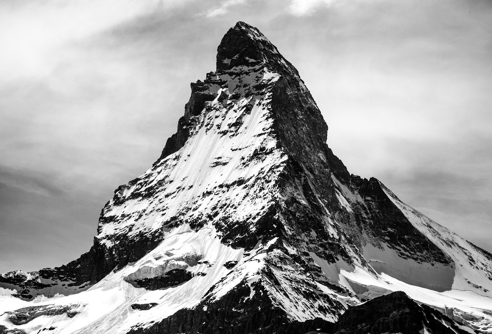
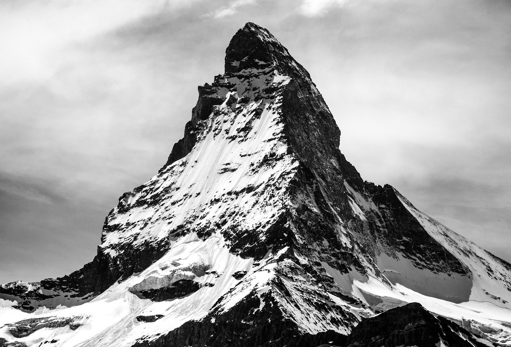

Entstehung von Bergen
Mit zunehmendem geologischen Alter trägt die Erosion dazu bei, dass die Formen milder werden und die Gebirge niedriger. Beispiele dazu bieten die deutschen Mittelgebirge.
Neuere Forschungen deuten darauf hin, dass erstmals im Neoarchaikum die Voraussetzungen für das Entstehen von höheren Bergen gegeben waren. In den Zeitaltern davor war die kontinentale Lithosphäre aufgrund ihrer hohen Temperatur und zu geringen Dicke für topographische Erhöhungen von mehr als 2.500 Metern noch nicht ausreichend tragfähig.
Mancher Steilhang im Hochgebirge macht sichtbar, dass Stein durchaus verformbar ist: es gibt Gebirgs-Falten im Ausmaß hunderter Meter und Schichten, die wie ein Stapel Papier verbogen sind. Fast jedes Gestein gibt nach, wenn die jährliche Bewegung nur einige Millimeter ausmacht. Auf raschere Kräfte reagiert es spröde – vergleichbar dem Siegellack – und bricht.
 

Im Bereich von Subduktionszonen, wo sich eine Platte der Erde unter eine andere schiebt, wird die untere aufgeschmolzen. Die heiße Schmelze ist leichter als ihre Umgebung und dringt nach oben. Dies ist eine Ursache des Vulkanismus, der ebenfalls für das Entstehen vieler Berge verantwortlich ist. Aktive und auch ehemalige feuerspeiende Berge nennt man Vulkane.
Eine in polnahen Gebieten vorkommende Gebirgsbildung ist die der Reliefumkehr: eine Mulde wird von Gletschern mit Geröll aufgefüllt, wobei der Untergrund durch das Gewicht des Eises unter Druck steht. Ziehen sich die Gletscher zurück, entspannt sich der Untergrund, und die Geröllfüllung kann teilweise über die Höhe der Umgebung empor gehoben werden. So entstandene Erhebungen sind zum Beispiel am Münsterländer Kiessandzug zu beobachten. Häufiger ist hingegen zu beobachten, dass ältere Bergschichten durch ihre größere Härte stehen bleiben, während jüngere schneller verwittern.
Berge können auf der Erde kaum höher als neun Kilometer emporragen. Dies liegt daran, dass die Basis eines Bergs sich ab dieser Höhe aufgrund des enormen Lithostatischen Drucks verflüssigt und so die Maximalhöhe festgelegt wird.
×